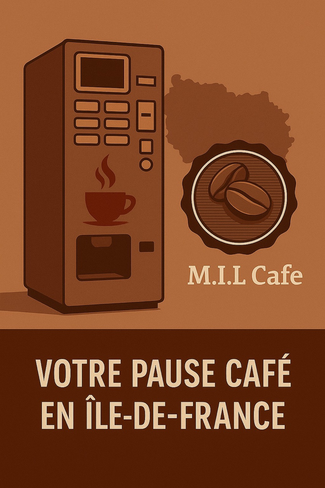

☕ Vivez une pause café irrésistible avec M.I.L.Cafe !
🌸 Des instants savoureux, sur mesure et conviviaux
- Une entreprise familiale depuis 2020, à votre service pour transformer chaque pause en moment de plaisir.
- En Île-de-France, nous installons des machines à boissons chaudes, fraîches et des distributeurs de snacks sucrés-salés adaptés à vos envies.
🌿 Pourquoi M.I.L.Cafe fait la différence
- Proximité : un interlocuteur dédié, présent et à l’écoute.
- Flexibilité : offres personnalisables selon vos habitudes.
- Fiabilité : équipements performants, entretenus régulièrement.
✨ Une satisfaction client au cœur de tout
- Fluide : installation simplifiée.
- Gourmand : sélection raffinée de cafés et snacks.
- Sans contrainte : accompagnement complet et professionnel.
M.I.L.Cafe, bien plus qu’un fournisseur…
Contactez-nous dès maintenant pour créer un lieu de pause convivial et attendu.